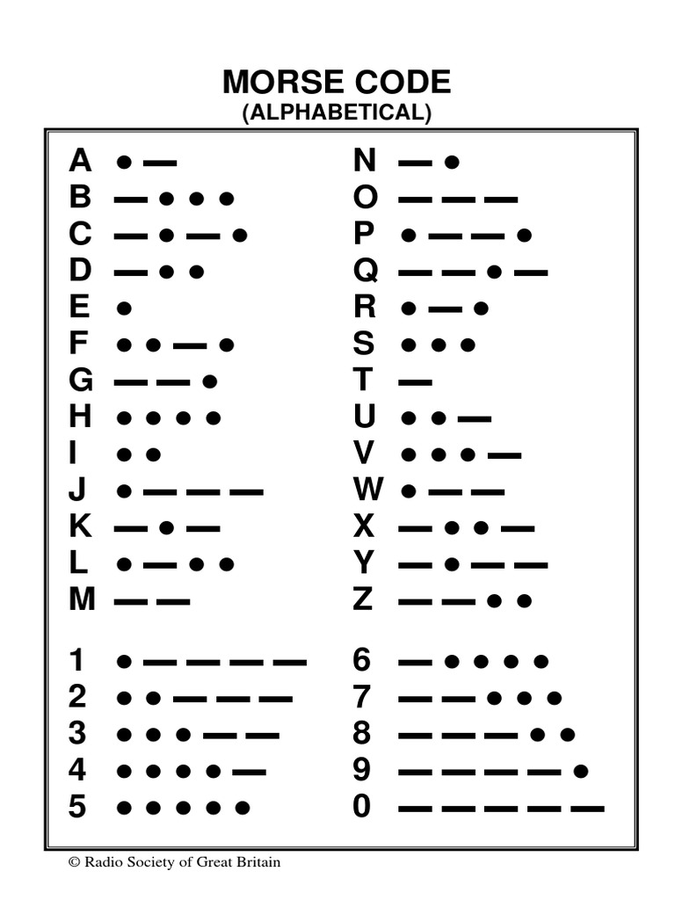

What the Heck is Binary?
Binary is a number system that only uses 0 and 1. You already know how to count in decimal (1, 2, 3, etc. etc.),
Why use Binary in Computers?
Computers work with electrical signals that are "on" (1) or "off" (0), which makes it easy for computers to run your favorite games, apps, and websites. Think of binary as the official language of computers.
How do you Count with Only 0 and 1?
Watch this video to see how:
Write a Secret Message in Binary
Morse code is a way to send secret messages using dots and dashes. Each letter and number has its own pattern. For example, "A" is a dot and a dash. Try the demo below: hold the button for a dash, tap it for a dot, and press play to hear your message. Can you spell your name in Morse code?
What are Logic Gates?
Logic gates are the fundamental building blocks of computers and electronic components. They are the switches that control how information flows in a circuit.
Minecraft and Logic Gates
Watch how an AND gate can be used to open and close a door in Minecraft. AND Gates need all inputs to be on to turn on. Notice how BOTH levers must be ON for the door to open so we can get to our diamonds!

What are Latches? Why do They Matter?
Latches allow your computer to store important information. Without latches, you couldn't store your favorite games, photos, or videos on your computer or phone.
Minecraft and Latches
Any storage unit in Minecraft, like a chest or a furnace, uses a latch to store items. The latch keeps the items in the chest even if you leave the game and come back later.

What is Machine Learning
Machine Learning involves teaching a computer how to do something. This could be finding a dog or a cat in a picture, but sometimes it can be more complex, like predicting the weather for the week, or finding a cure for cancer. Below is an example of a machine learning to identify different objects and sounds:
Train your own Machine Learning Model!
Watch these videos to get started training your own Machine
Learning Model, Then click the button below to start training!